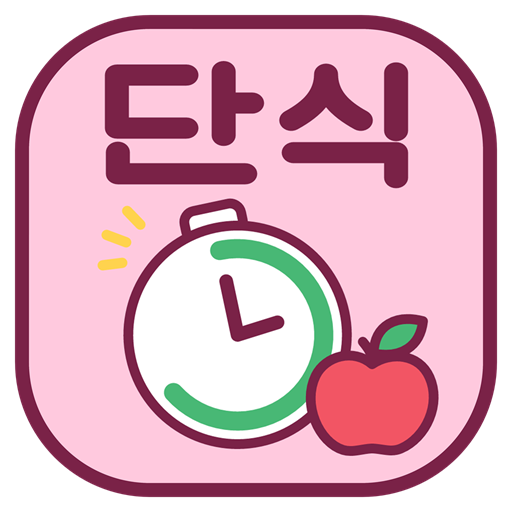
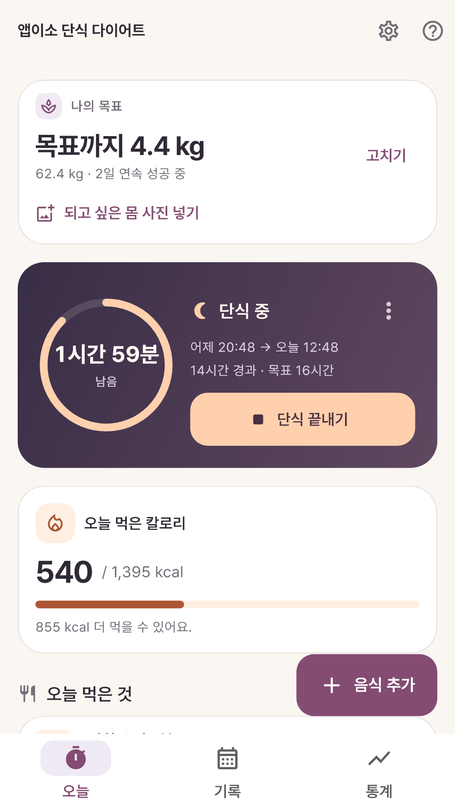
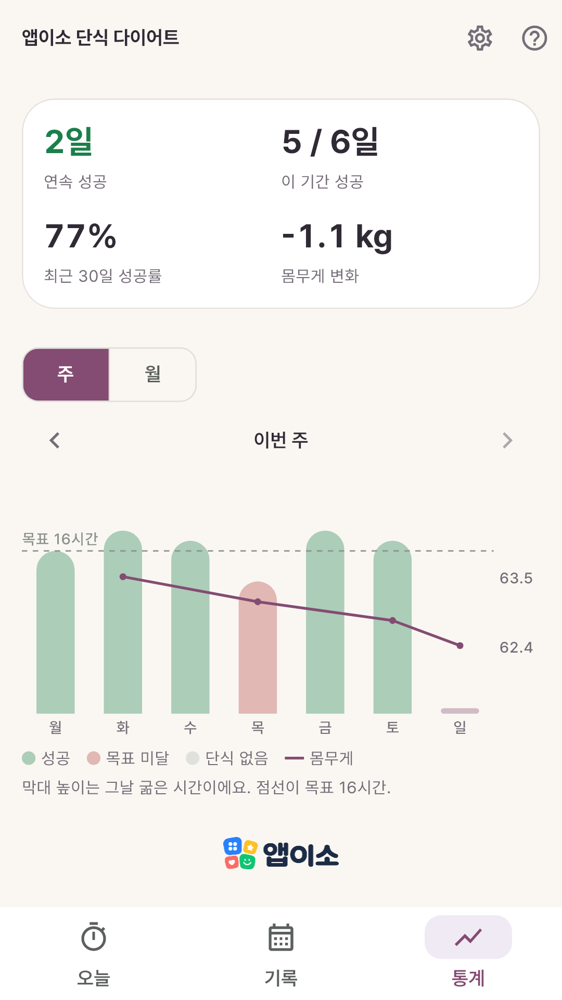
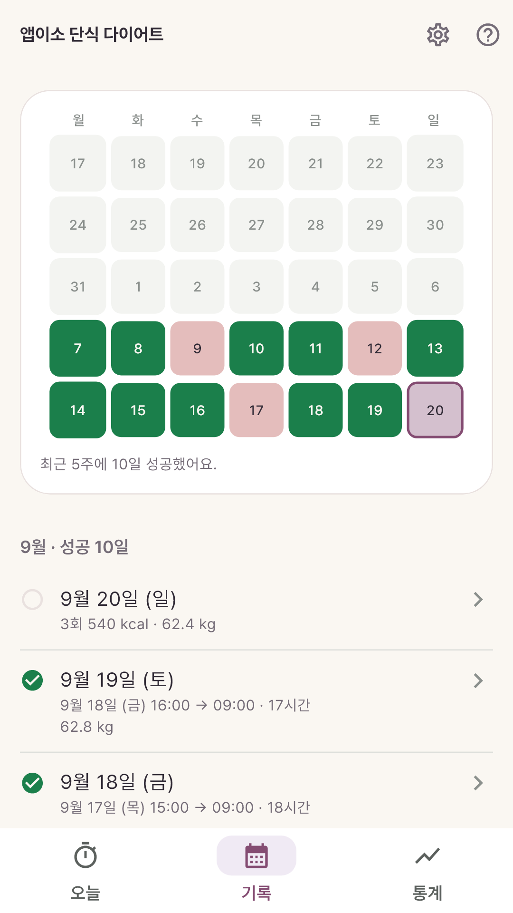
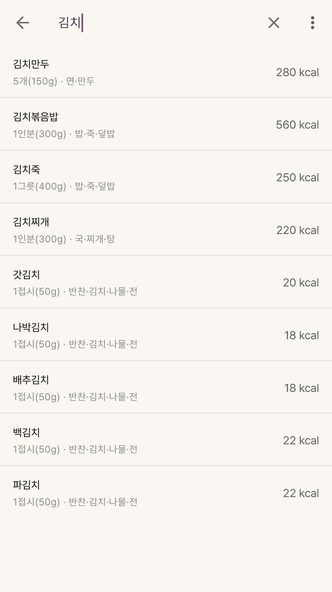
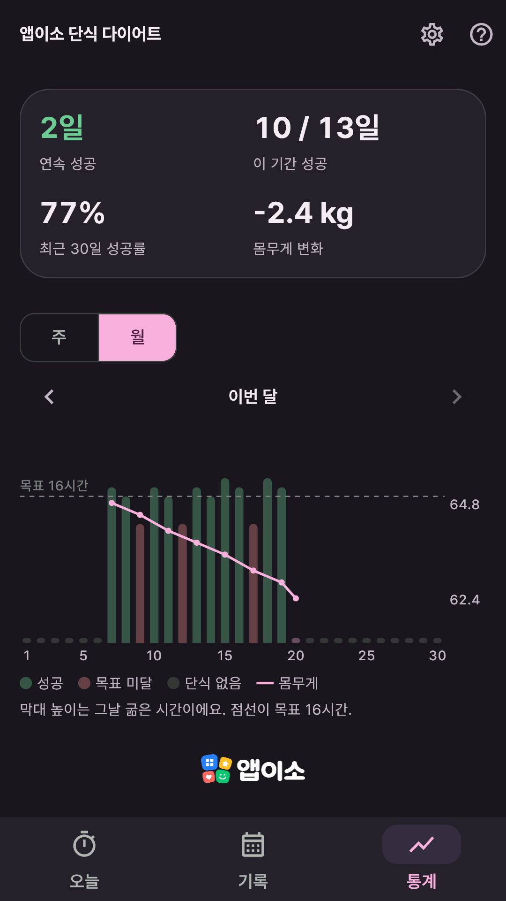

앱이소
단식 다이어트
굶은 시간과 먹은 것, 한 화면에.
출시 준비 중 · Android · 가입 없이 · 광고 없이 · 오프라인
간헐적 단식을 하는 사람에게 필요한 건 사실 세 가지예요 —
언제부터 굶었는지, 오늘 뭘 얼마나 먹었는지,
그리고 그게 몸무게로 이어지고 있는지.
이 앱은 그 셋을 한 화면에서 보여 줍니다. 회원가입도, 서버도, 광고도 없어요.
이런 걸 할 수 있어요
- 단식 타이머 — 12:12 · 14:10 · 16:8 · 18:6 · 20:4 · 하루 한 끼 중에 고르거나 목표 시간을 직접 정해요.
경과·남은 시간이 진행 링으로 보이고, 어젯밤부터 굶고 있었다면 시작 시각을 앞으로 옮길 수 있어요.
- 먹은 것과 칼로리 — 한국 음식 376개가 앱에 들어 있어요. 없으면 직접 적고
[내 음식]으로 저장해 다음부터 바로 골라요. 0.25인분 단위로 양을 정하고, 하루 합계를 목표와 견줘 봐요.
- 주·월 통계 — 단식 성공 막대와 몸무게 꺾은선을 같은 날짜 축에 겹쳐 그려요.
연속 성공 일수와 최근 30일 성공률도 함께 보여요.
- 날짜별 기록 — 지난 단식을 나중에 적거나 고칠 수 있고, 그날 먹은 것과 몸무게도 함께 봐요.
- 알림 — 목표 시간에 닿으면 한 번, 매일 정한 시각에 단식 시작 알림. 켜고 끄는 건 자유예요.
- 백업 파일 — 기록 전부를 파일 한 장으로 내보내고 되돌려요. 폰을 바꿀 때 쓰세요.
실제 앱 화면
화면에 보이는 기록은 사용법을 보여 주기 위한 예시예요. 설치한 앱에는 예시 기록이 들어 있지 않아요.





개인정보를 받지 않아요
- 이름·전화번호·이메일·생년월일을 적는 칸 자체가 없어요. 회원가입도 로그인도 없습니다.
- 단식·식사·몸무게 기록은 휴대폰 안에만 저장돼요. 개발자에게 전송되지 않습니다.
- 건강 기록이라 구글 계정 클라우드 백업에서 제외했어요. 폰을 바꿀 때는 앱의 백업 파일을 쓰세요.
- 인터넷 접속 권한이 없어 비행기 모드에서도 전부 동작해요. 요청하는 기기 권한은 알림 하나뿐이고, 거절해도 나머지는 그대로 쓸 수 있어요.
앱이 보여 주는 칼로리·체질량지수·기초대사량은 참고용 수치이며 의학적 진단이나 조언이 아니에요.
내장 음식의 칼로리는 일반적인 영양표 수준의 근사치입니다. 지병이 있거나 임신·수유 중이라면
단식을 시작하기 전에 의사와 상의해 주세요.